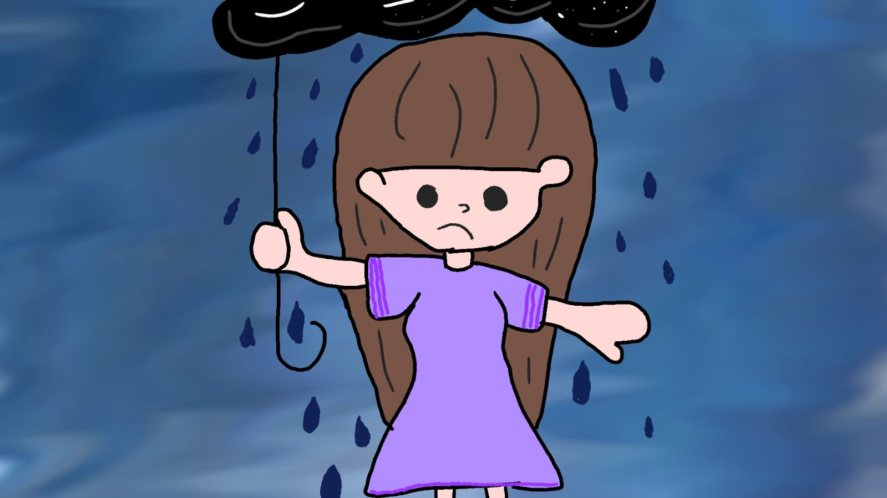
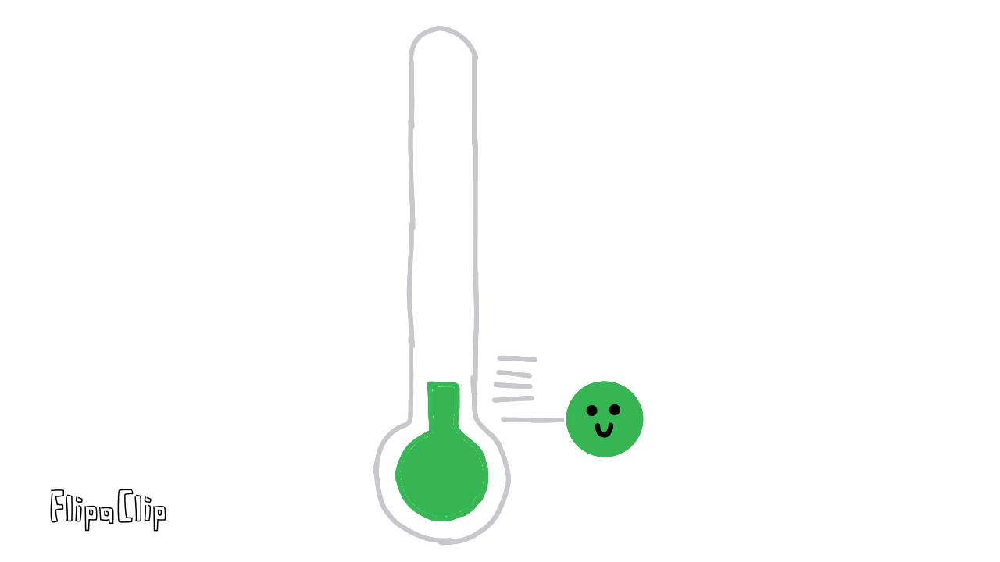

¿Que son?

El ciclo conocido como "El Niño" y su fase inversa "La Niña" son responsables de la mayor parte de la variabilidad climática en el Pacífico tropical. Este es el componente oceánico de ENSO (Oscilación del Sur), que está asociado con la aparición a lo largo del tiempo de aguas superficiales que son relativamente más cálidas (El Niño) o más frías (La Niña)  de lo normal en el Océano Pacífico y las regiones tropicales centrales y orientales. El impacto es claramente visible en la región del Pacífico Norte, partes de la región de los Andes y partes de la región del Caribe. ¿Efecto La Niña? ¿La influencia de La Niña? debido a un aumento significativo de la precipitación (anomalía positiva) y una disminución de la temperatura (anomalía negativa) en las regiones Andina, Caribe y Pacífico, así como en la región de los Llanos. Fenómenos como La Niña indican una combinación de condiciones oceánicas y atmosféricas y son consistentes con lo afirmado a finales de enero.
¿Por que se producen y que daños provoca?
El fenómeno de El Niño provoca inundaciones y deslizamientos de tierra que dañan los cultivos.
¿Que podemos hacer para evitar los efectos de fenomeno de "El Ñiño/La Niña"?
Los registros históricos muestran que el período comprendido entre marzo y junio es el más favorable para la ocurrencia del fenómeno de El Niño o La Niña y, por ello, los expertos, en estos momentos, mantienen intensas consultas sobre la posible evolución de la situación en el Pacífico tropical, debemos conocer el Fenómeno y debemos identificar los impactos que pueden ocurrir según nuestra ubicación geográfica. Por lo tanto, debemos construir nuestro Plan de Prevención de Desastres en torno a las consecuencias secundarias, como deslizamientos de tierra, inundaciones, sequías, incendios forestales.